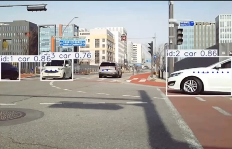
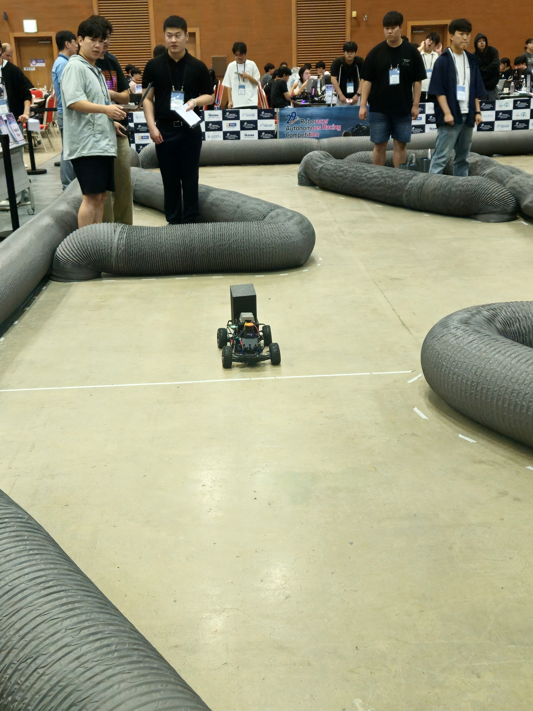

센서융합, 상태추정
카메라, 라이다, IMU 관측 처리와 차량 상태 연속 추정
- 상황에 맞는 차량 코너점 계산 방법 선택
- IMM, Kalman Filter 기반 위치, 속도, 방위각 추정
- 가림, GPS 열화, 센서 노이즈 대응
AUTONOMOUS SYSTEMS / SENSOR FUSION / EMBEDDED SOFTWARE
곽민재 전자전기공학 석사
카메라, 라이다, IMU 기반 상태추정부터 경로계획과 STM32 실시간 시스템까지 설계하고 구현했습니다. 시뮬레이션 결과를 교차로, 농용 트랙터, 자율주행 경기 차량과 실기기에서 확인해 왔습니다.
논문, 프로젝트, 실험 결과로 확인된 세 가지 축
카메라, 라이다, IMU 관측 처리와 차량 상태 연속 추정
인지 결과에서 안전한 후보 경로 선택까지의 폐루프 구성
알고리즘의 실시간 태스크, 상태기계, 운용 화면 구현

교차로에서 차량이 가려지거나 센서 관측이 흔들릴 때, 상황에 맞는 차량 코너점을 선택하고 IMM으로 위치와 움직임을 연속 추정.

라이다로 벽과 장애물을 구분하고 최대 30개의 Frenet 후보를 평가. 실차 충돌과 경로 생성 실패 원인까지 분석.

기어와 브레이크 신호 없이 IMU 시계열로 전진, 후진, 정지를 판별. 평균 후진 F1 99.52%.
연구 주제와 기여 범위
센서융합 연구의 지식재산 성과
센서융합과 자율주행 연구에서 실시간 임베디드 SW 구현까지
석사, GPA 4.29/4.5, 모빌리티 시스템 및 제어연구실
도시시스템공학, 전자전기공학 복수전공, GPA 3.79/4.5
73학점 이수, GPA 4.31/4.5, 중앙대학교 편입
C/C++, STM32/FreeRTOS, Linux 시스템 프로그래밍, 요구사항 분석, 설계, 검증
학부연구생 → 연구조교, 센서융합, 차량추적, 자율주행 연구
실습자료 재구성, 장비 및 예제코드 사전검증, 강의평가 1위
카메라, 라이다, 레이더, 센서융합, 경로계획, 위치추정, 차량제어
각 카드를 누르면 해당 기술을 적용한 프로젝트로 이동합니다
LANGUAGEPython
상강화학습, 센서융합, 객체 인지와 경로계획 구현. DQN 차량추적과 RoboRacer 실차 모듈 적용.
LANGUAGEC
중STM32 센서 처리와 제어 구현. GPIO, UART, PWM, 입력 캡처와 FreeRTOS 태스크 구성.
LANGUAGEC++
중ROS 2 기반 회피 판단과 경로계획 구현. C++17 A*, Dynamic VO와 추상 인터페이스 적용.
LANGUAGEC#
하.NET 8 지휘통제 시뮬레이션 엔진과 추천 로직 구현. WPF MVVM 구조와 JSON 데이터 분리.
ENGINEERINGMATLAB
상카메라와 2D 라이다 차량추적 시뮬레이터 구축. 다양한 거동과 센서 조건에서 반복 검증.
ROBOTICSROS / ROS 2
중상센서 토픽, 노드와 launch 운용, 모듈 연동. 연구용 시뮬레이션부터 실차 검증까지 수행.
SIMULATIONGazebo / RViz
Gazebo Harmonic 수중 시뮬레이션 구성. RViz에서 계획 경로, 위협 통로와 회피 상태 확인.
EMBEDDEDSTM32 / FreeRTOS
STM32F429 기반 5개 태스크와 10개 메시지 큐 구성. 센서, 서보, 판단과 GUI 처리 분리.
EMBEDDED UITouchGFX
초음파 스캔 결과, 탐지와 추적 상태, 거리 표시 화면 구현과 FreeRTOS 로직 연동.
SYSTEMLinux
시스템 프로그래밍과 커널 학습. GCC, Makefile, 정적 및 동적 라이브러리와 GDB 실습.
COLLABORATIONGit
브랜치, Merge, Rebase와 Pull Request 기반 협업. ROS 2와 팀 프로젝트 버전 관리.
TOEIC 905, OPIc IH